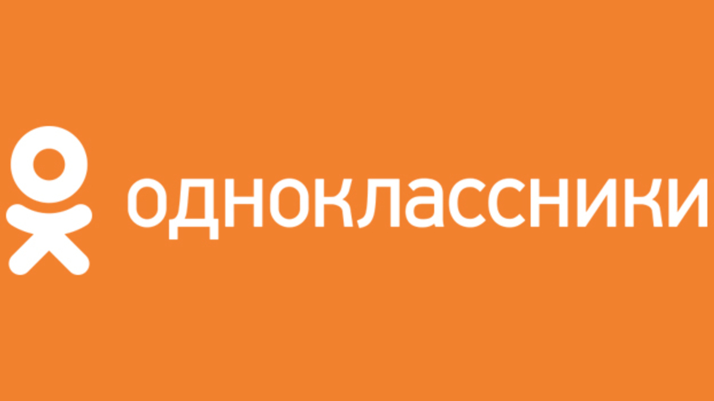
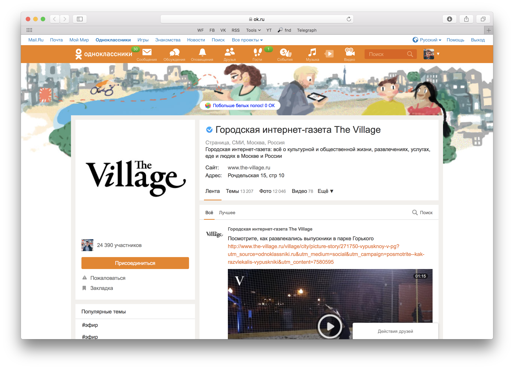
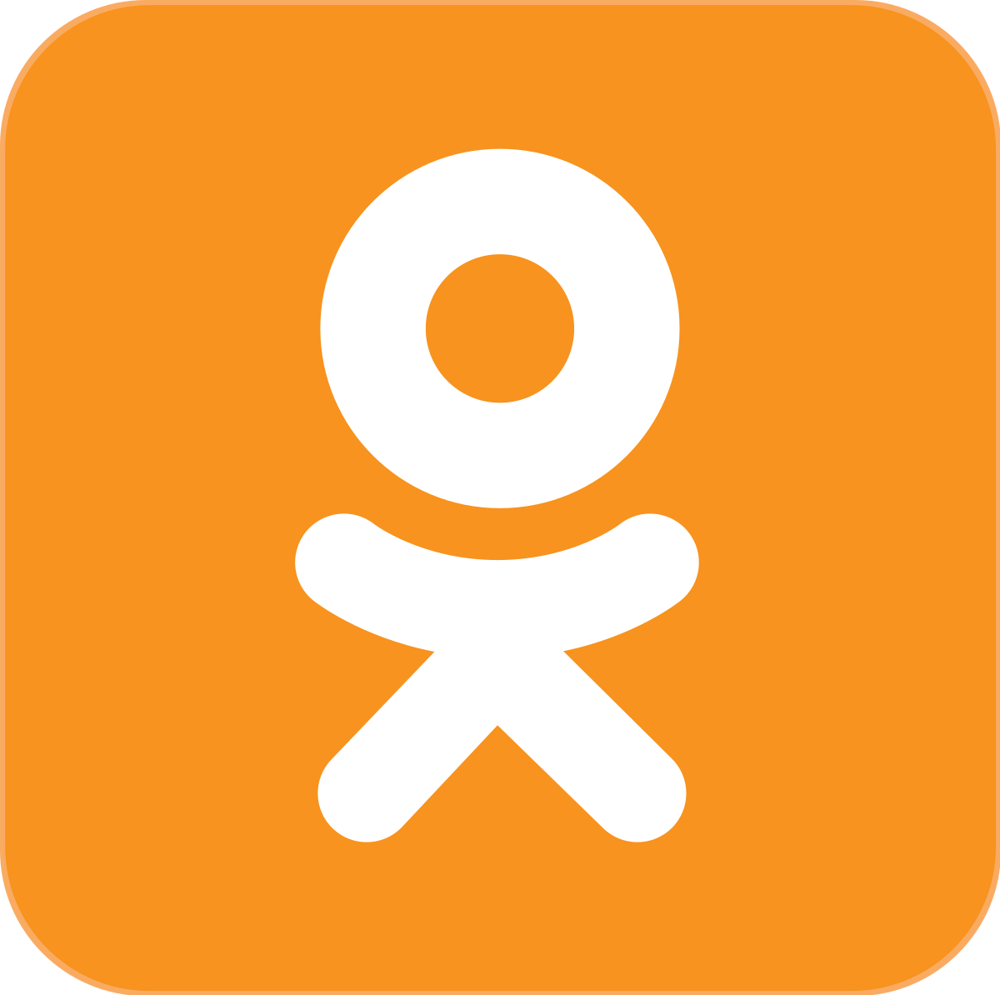
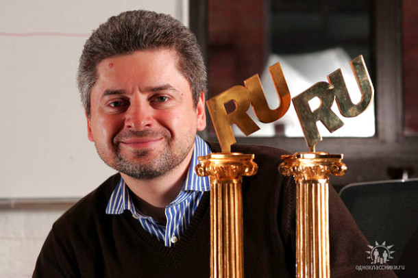

— высокодоходный и эффективный проект, а также площадка для развития малого и среднего бизнеса.
Одноклассники (сокращённо ОК) развивают сервисы для своих клиентов, предоставляя возможность продвигать бренды и компании.
ОК развивают собственную экосистему для ведения бизнеса внутри соцсети. В настоящее время на площадке насчитывается 1 млн предпринимателей,
которые ведут страницы в ОК. Основные статьи доходов самой соцсети — IVAS («подарочки», оценки к фотографиям «5+», функция «Невидимка» и др.), игры и реклама.
Одна из крупнейших социальных сетей в России и странах ближнего зарубежья, входит в холдинг VK (ранее Mail.Ru Group).
41 миллион жителей России ежемесячно используют Одноклассники: общаются с друзьями и близкими с помощью сообщений, голосовых и видеозвонков, открыток и стикеров.

Функциональные особенности ОК:
Технологичная контентная и сервисная платформа: в социальной сети можно смотреть трансляции в качестве 4К,
слушать актуальную музыку, покупать товары и услуги и осуществлять денежные переводы в 18 стран мира.
На платформе Одноклассников доступны видео, музыка, игры и онлайн-сервисы, а также уникальные способы выражения эмоций:
«подарочки», «оценки», кнопка «класс» и другие эмоции на посты. На площадке зарегистрировано более 14 млн групп, включая группы брендов, звезд и СМИ.
С 2015 года ОК активно развивают присутствие ТВ-каналов и изданий, имея уникальные возможности видео- и радиотрансляций в режиме реального времени,
рекламного продвижения, статистики. К настоящему моменту в Одноклассниках открыли свои сообщества более 600 медиа.

Ядро аудитории ОК:
— женщины и мужчины 25-44, 84% аудитории посещают ОК с мобильного,
64% — только с мобильного. Самая большая по численности аудитория ОК — Москва и Московская обл.
В ОК представлены все поколения людей: дети, подростки, ядро аудитории 25-44 года и люди старшего возраста.
Одноклассники связывают разные возрастные и социальные группы людей и помогают выстраивать уникальные для российского интернета
вертикальные связи между людьми. При этом ОК — это не только Россия, но страны СНГ и дальнего зарубежья. Одноклассники — популярная
социальная сеть в таких странах, как Армения, Беларусь, Казахстан, Германия, Грузия, Молдова, Азербайджан и Узбекистан.
В Одноклассниках работает служба поддержки пользователей, которая доступна 24 часа в сутки, работает в формате онлайн-чата и помогает даже анонимным пользователям.
Помимо этого, ОК тщательно модерируется на спам и нежелательный контент. Это позволяет регистрироваться в соцсети даже детям.
Контент модерируется не только работниками ОК, но и самими пользователями.

История
Изначально проект позиционировался как хобби. Человек по имени Альберт Попков развивал его как любительский проект с минимальными вложениями и надеждами.
Он создавался в свободное от основной работы время. Первым официально зарегистрированным пользователем российского стартапа стал дизайнер социальной сети Дмитрий Уткин.
Примечательно, что аудитория сайта начала стремительно расти без каких-либо серьезных вложений и рекламы.
В ноябре 2006 года она уже достигла 1.5 миллиона зарегистрированных пользователей. Создатель портала принял решение зарегистрировать «Одноклассники» как юридическое лицо.
В ом же году возникли серьезные финансовые проблемы. Социальная сеть требовала хороших финансовых вливаний, которых пока не было. Личные деньги Попкова стремительно таяли,
и программист оказался перед непростым выбором: продать перспективный проект или продолжить его развитие, найдя хорошего инвестора.
К счастью, осенью 2006-го года такой человек был найден. «Одноклассники» почти мгновенно изменили технологическую платформу, привлекли квалифицированных специалистов и
почти мгновенно стали серьезной компанией.

Альберт Попков